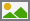
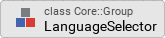

Adding a language switcher
In the last chapter, we added German as second language to the project and created five localizable language strings. Using these language strings, we replaced all hard-coded text strings in the textual elements of our GUI components. That’s great, our application is localized now. However, currently the user does not have the possibility to change the language of the user interface. We will change this in the next lesson by adding a language switcher to the application.
Adding the resources for the language switcher
Our language switcher will be quite simple: we will place a English and a German flag side by side in the upper right corner of the application window. Once the user clicks on a flag the language will be changed.
First we store the needed image icons inside the project:
{kind=link}
{kind=link}
Adding the flag bitmap resources
Now that we have the two icons available, we will make use of them and create two graphical bitmap resources inside our project. We will put these resources inside a new unit Icons so let’s go ahead and add the unit first and the two flag bitmap resources afterwards:
-
Click on the
 Project tab (the first tab from the left).
Project tab (the first tab from the left). -
Identify the note frame with the caption GUI project, it currently contains the icon
 representing the Application unit and the icon
representing the Application unit and the icon  representing the Strings unit.
representing the Strings unit. -
From the gallery templates window to the left (Alt+1), drag the element
 Unit inside the Chora folder over to the canvas and place it underneath the existing Strings unit. Rename the unit to Icons.
Unit inside the Chora folder over to the canvas and place it underneath the existing Strings unit. Rename the unit to Icons. -
Double click on the newly inserted unit
 . Inside the composer window, a new tab Icons appears which shows the currently empty unit.
. Inside the composer window, a new tab Icons appears which shows the currently empty unit. -
From the gallery templates window to the left, drag the element
 Annotation Group, over to root canvas. Rename the group to Flags.
Annotation Group, over to root canvas. Rename the group to Flags. -
From the gallery templates window to the left, drag the element
 Bitmap Resource inside the Resources folder over to the canvas and place it inside the just inserted annotation group. Rename the constant to FlagUK.
Bitmap Resource inside the Resources folder over to the canvas and place it inside the just inserted annotation group. Rename the constant to FlagUK. -
In the inspector window, change the property FileName of the newly inserted bitmap resource to .\Flags\uk.png. You may either type in the path and filename directly or you can make use of the file chooser that gets invoked one you click at the symbol … located at the right end of the row.
-
From the gallery templates window to the left, drag another
Bitmap Resource element over to the canvas. Rename the constant to FlagGermany. -
Change the property FileName of the newly inserted bitmap resource to .\Flags\de.png.
Our flag bitmap resources are ready for use now, they should look like illustrated in Figure 1 below:

Building a pushbutton flag component
With the resources available, we now can build a reusable pushbutton flag component that will be used inside the language switcher component later on:
-
We want to place the push button component in the Application unit, so we have to invoke this unit first: click on the
Project tab and double click on the Application unit to open the corresponding composer tab. Inside the tab, you should now see the Application root component and the Pushbutton component, built by you. -
From the gallery templates window to the left, drag the element
Annotation Group, over to root canvas. Rename the group to Language selector. -
From the gallery templates window (Alt+1) with folder Component Templates opened (press key C twice), drag an instance of the
 Push Button component template to the component’s canvas. Place the element right inside the newly created Language selector annotation group. Rename the component to PushButtonFlag using the F2 key.
Push Button component template to the component’s canvas. Place the element right inside the newly created Language selector annotation group. Rename the component to PushButtonFlag using the F2 key. -
Double click on the newly inserted
Push Button component. Inside the composer window, a new tab titled Application::PushButtonFlag appears which shows the component template.
We now have to adapt the component to our needs:
-
First, click on the note element that contains a lot of text and press the Del key to delete this element.
-
Our flag inside the component has a size of 46 × 33 px. Since we want to have a black one pixel border around the selected flag, the component size should be 48 × 35 px, so let’s adjust this: click on the property
 Bounds to select the element. Now, in the in the upper member area of the inspector window right to the main composer window you should see the element named Bounds selected. Also note the attributes and properties area below that shows all properties of the currently selected Bounds property.
Bounds to select the element. Now, in the in the upper member area of the inspector window right to the main composer window you should see the element named Bounds selected. Also note the attributes and properties area below that shows all properties of the currently selected Bounds property. -
Inside the attributes and properties area, we can adapt the default bounds values to our needs:
-
Click on the black triangle left to the Default element. Multiple lines will show up which hold the values for the origin (x, y) and the size of the element (width, height).
-
Alter the w instance property of the component to the value 48 to set the default width of the component to 48 px.
-
Alter the h instance property of the component to the value 35 to set the default height of the component to 35 px.
-
In order to adapt the size of the component on the screen, click on the Reload icon
 in the second row of the toolbar or press F7 to reload the class. The blue border of the element will shrink to the new size then.
in the second row of the toolbar or press F7 to reload the class. The blue border of the element will shrink to the new size then.
-
Looking at the inspector window, we can see that our component consist of three graphical elements, titled Background, Border and TouchHandler. Let’s adapt these elements, too:
-
Adapt the size of the Border element to 48 × 35 px by altering the default width and height of the property Bounds of the Border element (as you did when changing the size of the whole component above).
-
Adapt the size of the TouchHandler element to 48 × 35 px. Do so so, alter the property Point2 of the TouchHandler element to <48,0>. Also, set the property Point3 to <48,35> and the property Point4 to <0,35>. The TouchHandler element should now fit exactly into the component again.
-
Delete the Background element using the Del key. We don’t need this element, since we will replace it with our flag icon.
-
Inside the method UpdateViewState, the color of the background is changed depending on the state of the component (pressed, selected, enabled). Since we just deleted the background, we have to remove all references to the deleted element, so inside the method body, look for the 3 code lines
Background.Color = #XXXXXXXX;and remove these three lines.
Now we are ready to insert our flag to the component:
-
From the gallery templates window (Alt+1) with folder Views opened (key V), drag an instance of the  Image bitmap view to the component’s canvas. Rename the Image element to Flag using the F2 key.
-
Adapt the size of the Image element to 46 × 33 px by altering the default width and height of the property Bounds of the Image element. Define an offset of one pixel from the origin by setting the default x and y coordinate inside the property Bounds to 1.
-
Set the property Bitmap of the Image element Icons::FlagUK.
-
In the inspector window, select the Image element and press the keyboard combination Ctrl+Down multiple time to move the Image element down in the element hierarchy. You may stop once you placed the element just below the TouchHandler element.
While our component is usable now, it is not reusable yet. If at all possible, try to reuse your components! Our goal must be to develop one single flag component only and reuse this component once we add several flags for language switching to the main window. In order to make the component truly reusable, we have to add two  properties Language and BitmapFlag to the component. These properties can then be set individually for each component’s instance used inside the application. Let’s go and add these properties to our component:
properties Language and BitmapFlag to the component. These properties can then be set individually for each component’s instance used inside the application. Let’s go and add these properties to our component:
-
From the gallery templates window (Alt+1) with folder Chora opened (key C), drag an instance of the
Annotation Group to the component’s canvas. Place the element right beneath the component’s canvas and rename the property Caption of the element to User defined properties using the inspector window. -
Now we are ready to insert our properties: Click on the element
Property, and drag an instance over to the component’s canvas. Place the element inside the note rectangle you inserted and adapted in the previous step. -
The property will be used to store the flag element of our component, therefore we rename the property to BitmapFlag using the F2. Please note that the names of the OnSet and OnGet methods automatically change to OnSetBitmapFlag and OnGetOnSetBitmapFlag respectively.
-
Currently, the data type of the property is int32, that’s not what we want, instead we want to store a bitmap resource value (= the flag used) inside the property. To be able to do so, we change the value of the property Type to Resources::Bitmap inside the inspector window.
The property is now set up, however a change of the property value is not yet reflected inside the flag component. To overcome this, we have to add some code to the OnSet method which is called each time a new value is assigned to the property:
-
Double click on the method OnSetTextHeader of the property. In the code editor window, replace the TO DO: section at the bottom with the code line
Flag.Bitmap = value;. Now, if a new value gets assigned to the BitmapFlag property, this is immediately reflected in the GUI.
The first property is ready to go, so let’s add a second property to store the language associated with the flag:
-
From the gallery templates window drag another
Property to the component’s canvas. -
Rename the property to Language using the F2 key.
-
Change the type of the property to language, with a default value "Default".
Our flag component is ready for use, it should now look like illustrated in Figure 2 below:

Building the language switcher component
Next, we need to build the language switcher component, holding two or more flags for language selection:
-
From the gallery templates window (Alt+1) with folder Component Templates opened (press key C twice), drag an
 Empty GUI component to the component’s canvas. Place the element inside the Language selector note group, underneath the PushButton component. Rename the component to LanguageSelector using the F2 key.
Empty GUI component to the component’s canvas. Place the element inside the Language selector note group, underneath the PushButton component. Rename the component to LanguageSelector using the F2 key. -
Double click on the newly inserted  component. Inside the composer window, a new tab titled Application::LanguageSelector appears which shows the empty GUI component.
We now have to adapt and fill the component according to our needs:
-
First, click on the note element that contains a lot of text and press the Del key to delete this element. Also delete the methods UpdateViewState and UpdateLayout.
-
Adjust the component size to 104 × 35 px so that the component can held two flags. If you don’t know how to do that remember how you changed the size of the PushButton flag component above.
-
Press Alt+2 to select the gallery browser window, left to the main composer window. Alternatively, you may mouse click at the second tab Browser at the very top of the window.
-
In the search field immediately below the two tabs, type in Flag to shorten the class list.
-
Click on the
Application::PushButtonFlag class and drag an instance of the class over to the canvas. Align the component to the left. -
Drag another instance of the
Application::PushButtonFlag class over to the canvas. Align the component to the right. -
Using the inspector window, change the property BitmapFlag of the secondly inserted push button flag to Icons::FlagGerman and the German flag will be displayed.
-
Using the inspector window, change the property Language of the same flag to German.
-
Inside the gallery templates window (Alt+1) with folder Chora opened (key C), click on the element
 Slot Method and drag an instance over to the component’s canvas.
Slot Method and drag an instance over to the component’s canvas. -
Press F2 to rename the slot method to switchLanguage.
-
Using the inspector window, change the property OnActivate of both flags to the newly created slot method switchLanguage. This way, the switchLanguage slot method gets called once the user clicks on any of the flags. The only object passed to the slot method is the hidden parameter sender, in our case the PushButtonFlag instance the user clicked on.
-
Now, how do we implement language switching once the slot method gets called? That’s easy, double click on the
 switchLanguage and fill into the body of the slot method one single Chora code line:
switchLanguage and fill into the body of the slot method one single Chora code line:
language = ((Application::PushButtonFlag)sender).Language;This code line looks complicated to you? Let’s explain it: at the very beginning, left to the equal sign, we see built in global variable language. When assigning a language member name to this global variable, the language will be switched. So what gets assigned to this global variable? Simply the value of the property Language of the sender object, which is the PushButtonFlag instance the user clicked on. Since the slot method does not know anything about the identity of the sender, we have to cast the hidden parameter sender to an instance of the Application::PushButtonFlag class, that’s what the construct (Application::PushButtonFlag)sender does.
Our language switcher is ready for use, it should now look like illustrated in Figure 3 below: